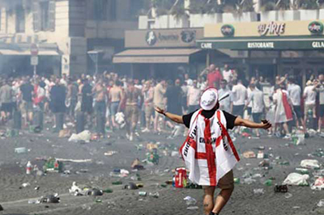
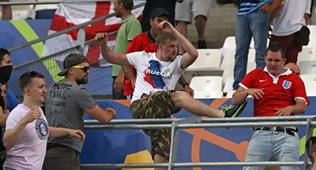

Til sommer er det endnu tid til at afholde WM i fodbold. Denne gang tager Rusland rollen som værtsnation. Allerede nu er Rusland under skarp observation for andre ting udenfor fodbolden. Bl.a. står de anklaget for at have brugt billig nordkoreanske arbejdskraft til at bygge deres stadions samt at levere kummerlige leve forhold til disse. Samtidig med at dette foregår har de i længere tid har Rusland også været anklaget for at have et statsligt dopingprogram. Selvom at dette er udenfor fodbolden i sig selv, er det et bekymrende årti fodbold går ind i, med mere korruption. Men hvad med Fodboldens andre problemer? .


Under EM-slutrunden i Frankrig i 2016 var der flere gange problemer med Russiske Hooligans som viste sig at være ekstremt voldsparate og endnu mere skræmmende: meget organiseret. Flere gange under slutrunden blev andre landes fans overfaldt af russiske hooligans som selv om de var i undertal brugte flaskehals manøvre og andre taktikker i Frankrigs smalle gader til deres fordel.
En russisk politiker var ude og hylde hans landsmænd på twitter og opmuntre dem til at kæmpe videre. Da han blev adspurgt til hans holdning var svaret at Frankrig ikke havde styr på deres sikkerhed.
I Rusland er Hooliganisme meget udbredt og nogen russiske hools vil kalde det en livstil. Som man har set mange andre steder i verden kommer Hooligans ikke nødvendigvis fra samme lag i samfundet og det samme vil man se hvis man kiggede på de russiske, der er højtuddannede mennesker blandt hooligans. Man har i mange år snakket om at Hooliganisme var en måde at få afløb for mange af de frustrationer man har i hverdagen samtidig med at der er noget fællesskab og noget at kæmpe for: et ry.
Men hvordan er det blevet sådan? Europæisk hooligan kultur har siden 2000 været på tilbagetog, så hvorfor er den russiske (og øst-europæiske) sub-kultur blomstret her de seneste år? I tilfældet med Rusland er svaret nok politisk. Man har fra politisk side været ligeglad med at 2 holds fans smadret hinanden bare så længe det ikke havde en større effekt på det russiske samfund. Man har også givet uheldige segmenter af de fanatiske fans i Rusland en vis magt i det russiske fodboldforbund (i hvert fald indtil for nyligt).
Udover alt det overstående så har der også været sub-kulturer i Rusland som har gået godt med hooliganisme. En vis gadekamp sub kultur som fandtes under det gamle sovjet passer rigtig godt ind i fodbold og fanatisme. Den hooligan kultur der er i rusland nu, er nærmest sådan at man kan gå til det. I sportshaller omkring i Rusland går alle de store klubbers fans til kamptræning hver uge og træner samtidig taktikker.
Det er åbenlyst et problem for Rusland især i disse tider, men hvis man spørger de fleste hooligans fra Rusland skal man ikke frygte noget ved WM. Russiske Hooligans værste fjende er nemlig Russisk politi og da politiet godt ved hvem de fleste ledere fra firmaerne er og kan få sat dem i fængsel meget hurtigt, er der ikke meget vilje til at lave problemer når hjemlandet tager imod resten af verden her til sommer.